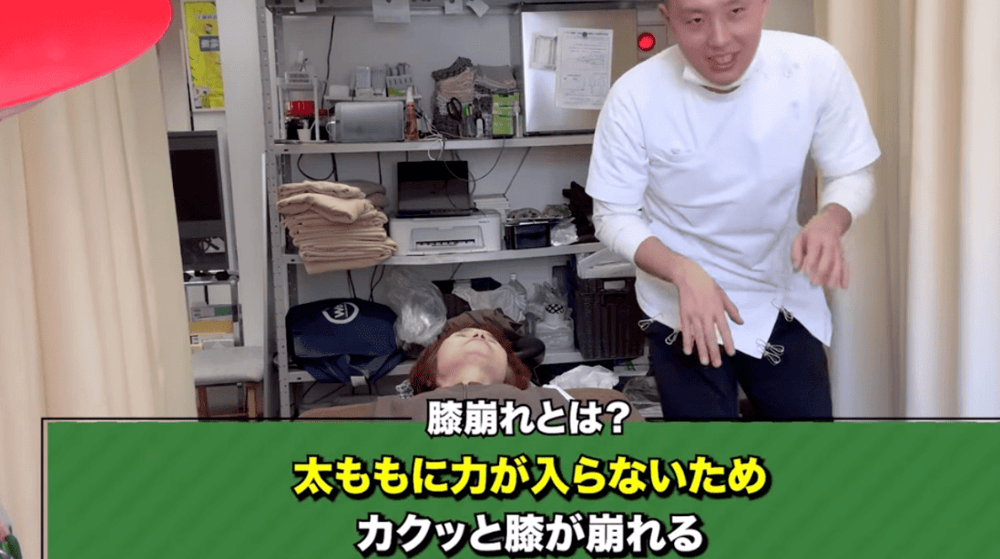
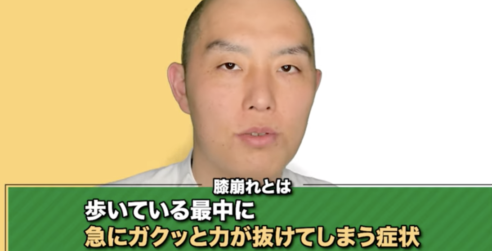
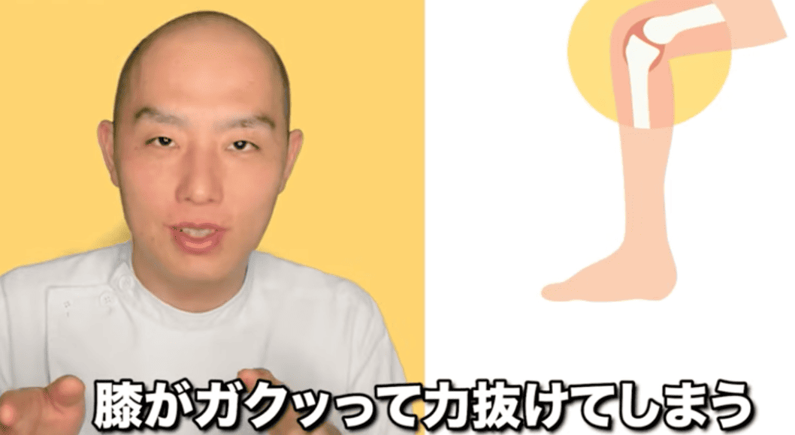
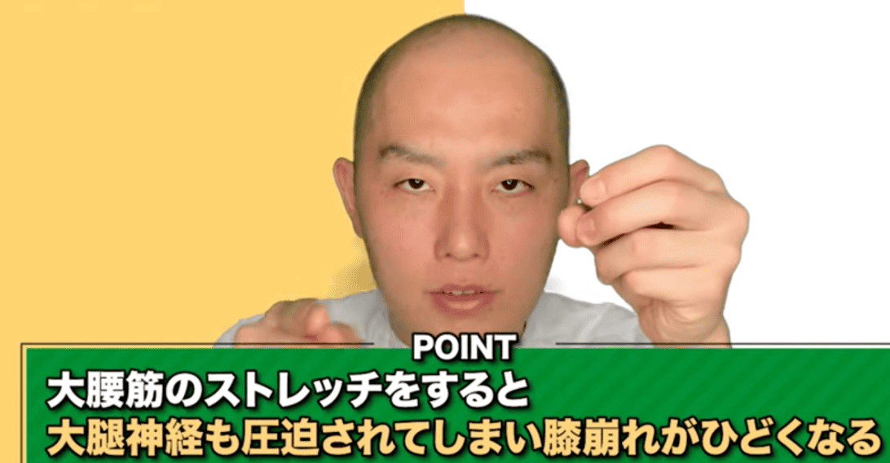
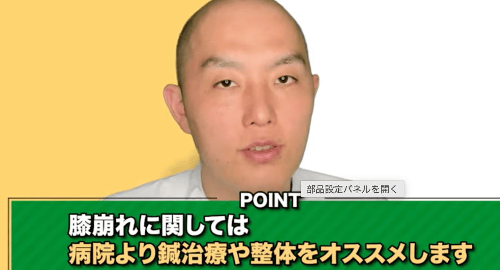
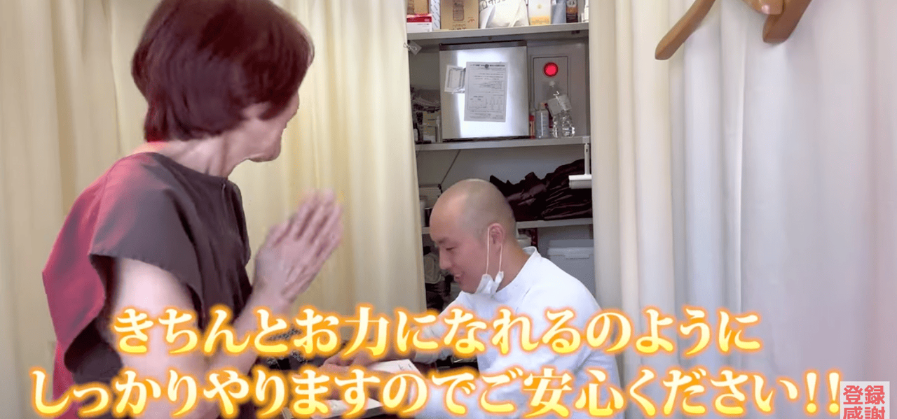

膝崩れの鍼灸
歩行中に膝がガクッと抜ける膝崩れに対し、腸腰筋・大腰筋・梨状筋の深層筋鍼灸で神経再生を促す解説。
まず知っておきたい要点と施術方針
膝崩れは膝関節の噛み合わせによるもののほか、お腹の奥の腸腰筋（大腰筋）が硬くなって大腿神経を圧迫するケースや、お尻の梨状筋の硬結から筋力低下・しびれを伴うケースがあります。放置して時間が経つほど回復が難しくなるため、早期の対応が重要です。（公式解説）
このようなお悩みはありませんか？
- ✓歩いているときや方向転換の瞬間に、急に膝がガクッと抜ける
- ✓朝起きた直後に膝の噛み合わせが悪く、痛みや水が溜まることがある
- ✓お尻に力が入らず、足のしびれや筋力低下を同時に感じる
- ✓リハビリやマッサージを続けているが改善しない
当院の施術アプローチ
院長YouTube解説・関連動画
膝崩れとは（原因、筋力低下について）

膝崩れを理解するにあたり、次の３点が大切です。
膝崩れは歩いていて急にガクッと力が抜けてしまう症状のことです。
リカバリーはほぼ不可能で、時間との勝負です。
膝崩れを感じてから時間が経つほど、回復が難しくなります。
膝崩れで悩まれている方の大半は、専門家のリハビリを受けております。マッサージではなかなか回復しないのが現状です。
膝崩れによって起きる筋力低下について

膝崩れで起きる筋力低下は、腸腰筋による大腿神経の麻痺によるものです。
大腿神経とは、前ももの筋肉（大腿四頭筋）に指令を送る神経のことです。腸腰筋の間を通る大腿神経は、構造上、非常に圧迫されやすいです。
大腰筋が硬くなることで大腿神経が圧迫されて脳からの伝達が遅れます。歩くときに脳は太ももに対して100%の力で体を支えろという指令を出しますが、腰の筋肉によってその神経が圧迫されてしまうと情報が太ももに伝達されません。
体重を50%くらいしか支えることができずガクッとなります。また、50%しか力を出せないため、筋肉がどんどん痩せていきます。これを筋肉の萎縮や麻痺と言います。この状態でリカバリーは不可能です。
⑤の腸腰筋からおきる膝崩れは、深層筋の鍼灸で早期の回復が図れます。
表面上のアプローチではなく、直接、腸腰筋に鍼灸を施すことにより、腸腰筋をほぐし、神経の再生をいち早く起こします。
膝崩れは、膝の関節構造に問題があることもあると言われています。
実際激しい運動をしている人や運動が好きな人は縦字靭帯という膝の中にある靭帯が少し伸びてしまい、膝がずれやすくなることがあります。
膝崩れでは、歩いたり方向転換するときに膝の力が抜ける

膝崩れでは、歩いたり方向転換するときに膝がガクッと力が抜けてしまいます。この症状は、大腿四頭筋という大腿の前側の筋肉が体を支えられることができなくなり力が抜けてしまうことで起こります。
この症状を体験すると転ぶことが怖くなるため、なかなか外に行けずだんだん運動不足になってしまい、筋力が低下してガクッとなりやすくなります。この悪循環を繰り返している人が多くいます。
膝崩れでは筋肉がどんどん痩せて、そもそも体を支えられなくなります。そのため、歩くことができなくなります。膝崩れで長く悩まれている人の太ももを見ると悪い方の太ももがどんどん痩せていきます。
痩せると筋肉の大きさはなかなか元に戻りません。一度痩せてしまうと元に戻りにくく回復に時間がかかってしまうため、早期の対応が必要です。
膝崩れの対処法と注意点を理解する。

膝崩れは、対処法を間違えると悪化していきます。
それぞれの膝崩れに、適切なアプローチをしていきましょう。
前提として、以下の対処法と注意点があります。
- •メチコバール（ビタミンＢ１２）を服用する。
- •腰の筋トレ、ストレッチは絶対しない。
- •下半身の筋トレは、続けられるかぎり続ける。
- •膝崩れには深層筋の鍼灸が非常に効果的です。
膝崩れで病院に行くと変形性腰椎症であると言われ、メチコバールやマルチビタミンを飲んで過ごしている人が多くいます。
大腿神経を圧迫している腰や大腰筋へのストレッチとマッサージは膝崩れの悪化を招きます。ストレッチは筋肉を伸長させますので圧迫が増します。特にヨガに多いため注意してください。
行なってよくなれば軽い方なので良いですが、行なって悪化する場合は取り返しがつかないことになります。絶対に控えてください。大腰筋の緩みを出すように自分でほぐして神経を解放してあげて改善を行いましょう。
膝崩れを改善するためには大腰筋という筋肉を緩めることが必要です。
当院では鍼灸で大腰筋まで鍼を入れてアプローチをします。自分でアプローチを行う場合は、仰向けになり、膝を曲げた状態で両手で骨盤の内側を押します。
膝崩れの筋トレは自重で行うスクワットが基本です。
筋トレすることで悪化する場合はすぐやめましょう。
膝崩れに対しての鍼灸

腸腰筋の鍼灸を行うことで、大腿神経を解放させることで、大腿神経の再生を促がします。
○深層筋の鍼灸は人間のもつ自己回復能力を利用した施術法です。
- •神経を圧迫するほど固まった腸腰筋に鍼灸をおこなう。
- •鍼灸で傷つけられた腸腰筋を、脳が察知する。
- •傷つけられた腸腰筋を回復させるため、細胞の再生を促がす。
- •結果、腸腰筋は柔らかくなり、神経の再生も進み、膝崩れ現象が無くなる。
膝崩れでご来院した方２７６名のうち、深層筋鍼灸の施術によって、良くなった方は２５０名です。回復率は９０パーセントの好成績です。
膝崩れで大事なことは２点です。
むやみに腰のストレッチ、マッサージを受けない。
筋肉からくる膝崩れ現象は鍼灸がおすすめ。
膝崩れは、加齢やストレス、運動のしすぎ、座りすぎなどと色々な理由をつけて放置している人が多いです。
一時的なものであるケースが多いため、そのまま良くなっている人が多いです。しかし、悪循環にはまってしまって抜けられない人もいるため大腰筋に対するアプローチを行うことをお勧めします。
病院よりも、整体や鍼灸がお勧めです。
🎥 他のYouTube切り抜き・解説を読む（あと1件）▼
首、腰、肩、自律神経失調症からくる全身不調の症状で悩んでいるTさん

Q.1番改善したい症状は何か？
A.体の痛み。特に背中と首が痛い。2番目に改善したい症状は痰がらみとだるさ。
Q.1番辛い時が10なら現在の辛さはどのくらいか？
A.薬で抑えて5くらい。痰がらみの薬も飲んでいるが、よくなっているかはわからない。
Q.痰の色は何色か？
A.若干白っぽくて黄色い時もある。茶色っぽい印象。
Q.時間帯によって痛みは変わるか？
A.変わる。胃の痛みもあるが、胃カメラで異常はなかった。
Q.緑内障について眼圧を調べたか？
A.眼科に行って正常眼圧緑内障と言われた。
Tさんは、上を向くと首の後ろが痛く、右肩左肩をバンザイすると肩の痛みがある状態でした。また腰を反ると腰に痛みがありました。
自律神経かと思い病院に行ったが薬が怖くて飲めなかったと言いますが、自律神経が崩れるには色々な条件があります。薬は自律神経を無理やり落ち着かせるため、落ち着かせたように見せているだけです。
鍼灸とは少し違い、鍼灸は自律神経が乱れる要因を潰して勝手に元に戻るという考え方です。上を向いたりバンザイをしたり腰を反ったりしても普通は痛くありません。
Tさんの場合、痛みがあるということは自律神経が歪む土台ができているということです。それが改善することで痰がらみや動悸や背中の痛みなどの症状が消えます。これは自律神経からきているもので脳過敏の状態です。
自律神経がおかしくなると免疫細胞が活性化するという福田安保理論があり、自律神経が崩れて免疫が働いてリウマチになる人もいます。改善するためにはいろいろな要因をつぶすことが必要です。改善しなければいけないところが体にたくさんあり、そこに対して施術を行います。
鍼灸や整体、病院の先生も信じているものとやってきた経験数で説明が変わります。当院ではゴールを目指すことと、体を完成させることを目標に施術を行います。
鍼灸の視点で考えると薬からくる症状と自分の体で起きていておかしくなる症状の２種類があり、Tさんの悩みの1つである歩き方についての症状は膝崩れです。
膝崩れとは太ももに力が入らず力が抜ける症状で、Tさんはステロイドで寝たきりになってしまったと思っていますが、薬は症状と関係ない可能性もあります。全身の筋肉が抜けて全く起き上がれないという症状に関して元々薬の影響はあったかもしれないですが、今の悩みは違う悩みの可能性があります。
胃の痛みは機能性ディスペプシアです。機能性ディスペプシアは胃に全く問題はなくても胃痛がある症状のことで、脳が胃が痛いと思い込ませることで起こります。
体が完成しない限り肺の痛みも続きます。体が改善しないと症状がおさまっていかないという特徴があるため早くゴールに行くことが大事です。
・足の施術で骨盤内臓器を狙う
・骨盤で腰を狙う
・左肩の痛みは肩峰下滑液包炎のため中の炎症を止めるように狙う
・首の悪いところは頸椎の横突起を狙う
・攅竹の鍼で眼圧を落ち着かせる
・系頭蓋直流電気刺激法で体性感覚野を狙う
・ストレッチマッサージの禁止
・カフェイン摂取の禁止
・激辛料理の禁止
・タンパク質を多めに取る
体が改善しない限りどんどん症状は進んでいきます。筋肉をほぐしたり薬でよくなったりしても症状が再発して増えていきます。症状に対するアプローチをしてもおさまりません。上を向いても腰を反っても痛みがなくなると膝崩れも改善します。
また、手と足は同じ温度であることが必要です。当院で施術するときは消毒液を使っていますがこれは揮発性のため基本的に冷たいものです。そのため施術者の手より温かいと良くなっているという目安になります。
ゴールまでいかないと症状はそのままになるため、ゴールまでいかせることが大事です。良くなるとみんな薬をやめてしまうものです。薬を止めるには良くすれば良いのです。
骨粗鬆症は女性ホルモンの変動で発症するものであるため薬を飲んでも良いですが、ステロイド性の場合薬をやめたら改善します。改善しない場合はステロイド性であると思っていても女性ホルモンからきている可能性があります。
体が変わった時に症状が悪くなることもあります。1個の症状が取れると違う症状を強く感じることがあるのです。これはすぐ改善するため気にしなくて良いです。
足が楽になってきたら腰が重くなりますが、腰が重くても動いたり歩いたりしても大丈夫です。ただ腰が重いというところから改善する人は多いです。
Tさんが改善するためには体を変えきる必要があります。3回チャンスが欲しいと思います。体が完成したら良くなりますが、3回である程度完成する見込みです。
体が変化した後時間差で良くなります。100%体が完成してから良くなるため、禁止事項を守って過ごして欲しいです。この症状は完成するまでが勝負ではありますが、Tさんの場合体を完成させることで良くなるタイプではあります。
Tさんは首や腰、肩、自律神経失調症からくる全身不調の症状でした。1回の施術で変化する片鱗は見えましたが、完璧に変化することはできませんですた。3回で変化して土台が見えてくるはずです。
筋肉、骨のお悩みのツボ図解とセルフケア
実際の施術ではお一人おひとりの体質・症状に合わせて選穴しますが、筋骨格系疼痛（腰痛・関節痛・頸肩痛・坐骨神経痛）の臨床でよく用いられる代表的なツボの目安です。

📌 代表的なツボの詳細一覧表を開く（6穴） ▼
| ツボ名 | 位置の目安 | 主な狙い | セルフケアの注意点 |
|---|---|---|---|
| 腎兪（じんゆ） | へその高さの背骨（第2腰椎下）から指2本外側 | 慢性腰痛・腰背部の疲労緩和 | 強圧を避け温灸やカイロでの温熱ケアが安全 |
| 委中（いちゅう） | 膝裏の横ジワの中央 | 腰痛・坐骨神経痛・下肢後面の張り緩和 | 血管・神経が浅いため優しく押圧 |
| 環跳（かんちょう） | お尻の横のくぼみ（大転子と仙骨下端の間） | 坐骨神経痛・殿部〜大腿外側の放散痛ケア | テニスボール等の強押しは神経悪化に注意 |
| 陽陵泉（ようりょうせん） | 膝外側下方、腓骨頭の前下のくぼみ | 膝痛・こむら返り・全身の筋緊張緩和 | 総腓骨神経近接のためしびれが出る強押し禁止 |
| 風池（ふうち） | 後頭部の生え際、首の太い筋の外側のくぼみ | 頸肩痛・首こり・緊張型頭痛の緩和 | 頭を反らしすぎず心地よい強さでゆっくり |
| 肩井（けんせい） | 首の付け根（第7頸椎）と肩先を結ぶ中央 | 肩こり・頸肩部の重だるさ軽減 | 妊娠中は強い刺激を避ける。揉み返しに注意 |
国際査読論文の科学的エビデンス
国際的な医学データベース（PubMed・Cochrane等）で報告されている筋骨格系疼痛（腰痛・関節痛・頸肩痛・坐骨神経痛）領域の代表的な査読済み鍼灸研究をまとめています（標準治療との併用や研究上の限界を含めて正確に掲載）。
📚 査読論文データ・PubMed出典リンクを開く（4件） ▼
| 年・研究デザイン | 対象・規模 | 主な結果 | 限界・出典 |
|---|---|---|---|
| 2018年 IPDメタ解析 | 慢性筋骨格痛・頭痛 39 RCTs（n=20,827） | 全領域でシャム鍼・無治療比とも有意優位（P<0.001）、1年後も効果低下約15%で持続。 | 対照設定により効果量変動。 J Pain (PMID: 29198932) |
| 2020年 Cochraneレビュー | 慢性非特異的腰痛 33 RCTs（n=8,270） | 無治療比で直後疼痛（MD -20.32）と機能（SMD -0.53）が臨床的に有意改善。有害事象は軽微。 | 施術者盲検化不可・確実性は中等度〜非常に低。 Cochrane (PMID: 33306198) |
| 2024年 多施設RCT | 慢性坐骨神経痛 216名（6病院・52週追跡） | 4週時点の下肢痛VAS減少30.8mm vs 14.9mm（差-16.0mm, P<0.001）、52週後も持続。 | 中国3次病院限定・施術者盲検化不可。 JAMA Intern Med (PMID: 39401008) |
| 2016年 メタ解析 | 変形性膝関節症 10 RCTs | 短期（13週）で疼痛（WMD -1.24, p<0.001）と機能（p<0.001）が有意改善、26週も機能維持（p=0.016）。 | 試験間の異質性が高く運動療法併用が推奨。 JBJS Am (PMID: 27655986) |
参考文献・出典
- 銀座そうぜん鍼灸院「膝崩れの公式解説ページ」
- 2018年 IPDメタ解析（慢性筋骨格痛・頭痛 39 RCTs（n=20,827））— J Pain (PMID: 29198932)
- 2020年 Cochraneレビュー（慢性非特異的腰痛 33 RCTs（n=8,270））— Cochrane (PMID: 33306198)
- 2024年 多施設RCT（慢性坐骨神経痛 216名（6病院・52週追跡））— JAMA Intern Med (PMID: 39401008)
- 2016年 メタ解析（変形性膝関節症 10 RCTs）— JBJS Am (PMID: 27655986)
よくある質問（FAQ）
Q. 腰のストレッチや筋トレはした方が良いですか？▼
Q. 早めに受診した方が良いですか？▼
Q. 自宅でできるケアはありますか？▼
あわせて読まれる関連疾患（筋肉、骨のお悩み）
お尻から足後ろ側へ広がる痛みやしびれ。原因を見極め、腰・臀部・股関節の深層筋へ的確にアプローチします。
40〜60代に多い肩の激痛・可動域制限（五十肩）を、炎症期と拘縮期の見極めと鍼灸・全身バランス調整で改善する解説。
急性ぎっくり腰から慢性的な筋・筋膜性腰痛まで、深層筋（脊柱起立筋・腰方形筋・大腰筋など）から整える解説。
HTLV-1ウイルス感染者の一部に発症し、脊髄の炎症により両下肢のつっぱり・歩行障害や排尿障害が徐々に進む疾患です。
成長期の中高生がスポーツ中の急激な筋収縮により、骨盤の骨端線付着部で骨の一部が剥がれて起こる骨折です。
免疫系が自身の筋組織を攻撃して炎症と変性を起こし、対称性の筋力低下や筋痛をきたす全身性のリウマチ性疾患群です。
おひとりで悩まず、まずはご相談ください
銀座本院・川口・大宮・横浜・博多・田無の各院でご予約を承っております。